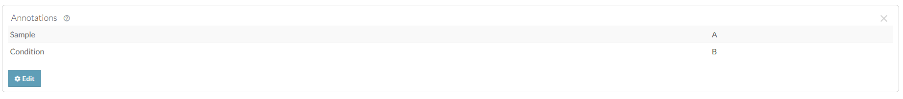

Overview
Annotations help users search for and find data, and they are a powerful tool used to systematically group and/or describe things in Synapse.
Annotations are stored as key-value pairs in Synapse, where the key
defines a particular aspect of your data, for example
(species, assay, fileFormat) and
the value defines a variable that belongs to that category
(mouse, RNAseq, .bam). You can
use annotations to add additional information about a project, file,
folder, table, or view.
Annotations can be based on an existing ontology or controlled vocabulary, or can be created as needed and modified later as your metadata evolves.
Note: You may optionally follow the Uploading data in bulk tutorial instead. The bulk tutorial may fit your needs better as it limits the amount of code that you are required to write and maintain.
In this tutorial you will:
- Add several annotations to stored files
- Upload 2 new files and set the annotations at the same time
Prerequisites
- Make sure that you have completed the Files vignette or have at least 1 file in your Synapse project.
1. Add several annotations to stored files
First let’s retrieve all of the Synapse IDs we are going to use
library(synapser)
synLogin()
# Retrieve the project ID
my_project_id <- (
Project(name = "My uniquely named project about Alzheimer's Disease") |> synGet()
)$id
# Retrieve the folders I want to annotate files in
batch_1_folder <- Folder(
name = "single_cell_RNAseq_batch_1",
parent_id = my_project_id
) |> synGet()
cat("Batch 1 Folder ID:", batch_1_folder$id, "\n")Next let’s define the annotations I want to set
# Define the annotations I want to set
annotation_values <- list(
species = "Homo sapiens",
dataType = "geneExpression",
assay = "SCRNA-seq",
fileFormat = "fastq"
)Finally we’ll loop over all of the files and set their annotations
synSyncFromSynapse() with
download_file = FALSE fills in the folder’s
files field without downloading any file content.
batch_1_folder <- batch_1_folder |> synSyncFromSynapse(download_file = FALSE)
# Loop over all of the files and set their annotations
for (file_batch_1 in batch_1_folder$files) {
# Grab and print the existing annotations this File may already have
existing_annotations_for_file <- file_batch_1$annotations
cat(
"Got the annotations for File:", paste0(file_batch_1$name, ","),
"ID:", paste0(file_batch_1$id, ","),
"Annotations:", rjson::toJSON(existing_annotations_for_file), "\n"
)
# Merge the new annotations with anything existing
existing_annotations_for_file <- modifyList(
existing_annotations_for_file, annotation_values
)
file_batch_1 <- file_batch_1 |>
synSetProperties(annotations = existing_annotations_for_file) |>
synStore()
cat(
"Set the annotations for File:", paste0(file_batch_1$name, ","),
"ID:", paste0(file_batch_1$id, ","),
"Annotations:", rjson::toJSON(existing_annotations_for_file), "\n"
)
}You’ll see that each file now has a number of annotations:
Batch 1 Folder ID: syn53205629
Got the annotations for File: SRR12345678_R1.fastq.gz, ID: syn53205687, Annotations: {}
Set the annotations for File: SRR12345678_R1.fastq.gz, ID: syn53205687, Annotations: {'assay': ['SCRNA-seq'], 'species': ['Homo sapiens'], 'dataType': ['geneExpression'], 'fileFormat': ['fastq']}
Got the annotations for File: SRR12345678_R2.fastq.gz, ID: syn53205688, Annotations: {}
Set the annotations for File: SRR12345678_R2.fastq.gz, ID: syn53205688, Annotations: {'assay': ['SCRNA-seq'], 'species': ['Homo sapiens'], 'dataType': ['geneExpression'], 'fileFormat': ['fastq']}2. Upload 2 new files and set the annotations at the same time
Assuming we have a few new files we want to upload we’ll follow a
similar pattern defined in the Files vignette,
except now we’ll specify the annotations attribute before
uploading the file to Synapse.
In order for the following script to work please replace the files with ones that already exist on your local machine.
batch_1_scrnaseq_new_file_1 <- File(
path = path.expand("~/my_ad_project/single_cell_RNAseq_batch_1/SRR92345678_R1.fastq.gz"),
parent_id = batch_1_folder$id,
annotations = annotation_values
) |> synStore()
batch_1_scrnaseq_new_file_2 <- File(
path = path.expand("~/my_ad_project/single_cell_RNAseq_batch_1/SRR92345678_R2.fastq.gz"),
parent_id = batch_1_folder$id,
annotations = annotation_values
) |> synStore()
cat(
"Stored file:", paste0(batch_1_scrnaseq_new_file_1$name, ","),
"ID:", paste0(batch_1_scrnaseq_new_file_1$id, ","),
"Annotations:", rjson::toJSON(batch_1_scrnaseq_new_file_1$annotations, indent = 2), "\n"
)
cat(
"Stored file:", paste0(batch_1_scrnaseq_new_file_2$name, ","),
"ID:", paste0(batch_1_scrnaseq_new_file_2$id, ","),
"Annotations:", rjson::toJSON(batch_1_scrnaseq_new_file_2$annotations, indent = 2), "\n"
)You’ll notice the output looks like:
Stored file: SRR92345678_R1.fastq.gz, ID: syn53206218, Annotations: {
"assay": [
"SCRNA-seq"
],
"dataType": [
"geneExpression"
],
"fileFormat": [
"fastq"
],
"species": [
"Homo sapiens"
]
}
Stored file: SRR92345678_R2.fastq.gz, ID: syn53206219, Annotations: {
"assay": [
"SCRNA-seq"
],
"dataType": [
"geneExpression"
],
"fileFormat": [
"fastq"
],
"species": [
"Homo sapiens"
]
}Results
Now that you have annotated your files you’ll be able to inspect this on the individual files in the Synapse web UI. It should look similar to:
